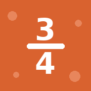
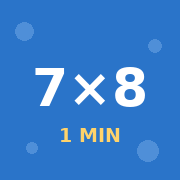
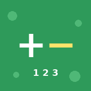

Rekenspellen

Breukenklimmer
Tafelsprint
SommenlandOpen een spel en kies in Safari: Deel → Zet op beginscherm. Doe dat voor elk spel apart.

Breukenklimmer
Tafelsprint
SommenlandOpen een spel en kies in Safari: Deel → Zet op beginscherm. Doe dat voor elk spel apart.